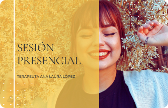
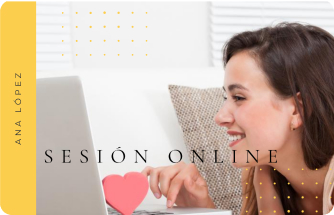
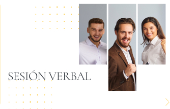
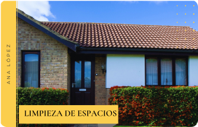

AGENDA TU SESIÓN
¿Qué energía requieren tú y tu cuerpo para crear la vida que deseas?
Sesión Presencial
Se trata de desbloquear los lugares donde sientes que no tienes elección o que no estas pudiendo resolver algo en tun vida. Usando técnicas de procesos corporales liberamos la información energetica que esta allí sin resolver. ¿Sabes que tienes elección y que puedes cambiar algo con solo elegirlo?
Sesión Online
En una sesión online, trabajamos de forma energetica, moviendo la información en el espacio y tiempo que se encuentra en el campo cuantico, es así que lo que veamos al trabajar dejara de dominarte en esa area de la vida. ¿Cómo sería vivir fuera de control, definición y linealidad con aquello que no quieres más?
Facilitaciones Verbales presenciales u online
Abriremos el espacio de posibilidades para ti y tu vida. Al destrabar situaciónes del pasado se creara más calma en el presente y se creara un futuro diferente. Los cambios son inmediatos. ¿Que energía requieres ser hoy para crear el futuro que deseas? Elige siempre!
Facilitación de Limpieza de Espacios
Si sientes que convives con energías pesadas, que no encuentras tu espacio o que no accedes a comodidad en tu hogar, quizas el espacio este requiriendo una limpieza. Lo que acemos es modificar la información de las moleculas que la casa o espacio tienen como memorias energeticas. Esto funciona también para los terrenos y si deseas vender con más facilidad. ¿Cómo sientes ese espacio en tu vida? ¿Te gustaría que esto cambiara y crear mayor espacio y facilidad?